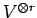
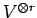
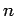
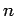

The general linear group  operates on

the
operates on

the  -fold tensor space of its
natural module
-fold tensor space of its
natural module  . Its group algebra factored by the kernel of this operation
is called the Schur algebra and denoted . By place permutation
the symmetric group
operates on
too. Moreover, both
actions centralize each other. This fact is known as
Schur-Weyl-Duality.
. Its group algebra factored by the kernel of this operation
is called the Schur algebra and denoted . By place permutation
the symmetric group
operates on
too. Moreover, both
actions centralize each other. This fact is known as
Schur-Weyl-Duality.
This situation admits a  -analogue which has been introduced
by R. Dipper and G. James in [DJ]. Here, instead of
the symmetric group you have to take the Iwahori-Hecke algebra of type A.
Its centralizer is called the
-analogue which has been introduced
by R. Dipper and G. James in [DJ]. Here, instead of
the symmetric group you have to take the Iwahori-Hecke algebra of type A.
Its centralizer is called the  -Schur algebra.
There are various generalizations of this theory for instance by
Dipper, James and A. Mathas
[DJM] who replaced the Iwahori-Hecke algebras by
Ariki-Koike algebras leading to so called
cyclotomic
-Schur algebra.
There are various generalizations of this theory for instance by
Dipper, James and A. Mathas
[DJM] who replaced the Iwahori-Hecke algebras by
Ariki-Koike algebras leading to so called
cyclotomic  -Schur algebras.
On the other hand
the original
-Schur algebras.
On the other hand
the original  -Schur algebra can be obtained (up to Morita
equivalence, cf. [DJ2]) using constructions
from the theory of quantum groups
[DD]. In this paper we will apply these constructions to obtain
-Schur algebra can be obtained (up to Morita
equivalence, cf. [DJ2]) using constructions
from the theory of quantum groups
[DD]. In this paper we will apply these constructions to obtain
 -Schur algebras which are related to the symplectic groups. We
will denote them by
.
Setting
the deformation parameter
-Schur algebras which are related to the symplectic groups. We
will denote them by
.
Setting
the deformation parameter  , we obtain classical symplectic
Schur algebras in the sense of S. Donkin [Do1].
The main result in this paper is that the symplectic
, we obtain classical symplectic
Schur algebras in the sense of S. Donkin [Do1].
The main result in this paper is that the symplectic
 -Schur algebras are cellular in the sense of J. Graham and
G. Lehrer [GL] and integrally quasi-hereditary
as algebras over the ring of integer Laurent polynomials.
-Schur algebras are cellular in the sense of J. Graham and
G. Lehrer [GL] and integrally quasi-hereditary
as algebras over the ring of integer Laurent polynomials.
In order to obtain the cellular basis we introduce
a quantum symplectic version
of bideterminants.
In [O2] the author has presented a symplectic version of
the famous straightening formula for bideterminants
in the classical case. Here, we will
develop the fundamental calculus for quantum symplectic bideterminants
and give a quantized version of that straightening
formula. This formula is powerful enough to imply almost all results
of the paper.
The standard modules (or cell
representations) of
are indexed by pairs
consisting of
an integer
and a partition
of in not more than  -parts. Here

is the dimension of the natural module of the symplectic group.
The part of the basis corresponding to
is labelled by pairs of
-parts. Here

is the dimension of the natural module of the symplectic group.
The part of the basis corresponding to
is labelled by pairs of
 -symplectic standard tableaux in the sense of
R.C. King [Ki], or more precisely by a reversed version of
them.
-symplectic standard tableaux in the sense of
R.C. King [Ki], or more precisely by a reversed version of
them.
The material of this paper is taken from my doctoral thesis [O1]
arranged in a completely reorganized form. Further it contains some
improvements.
Thus the restrictions in [O1, 3.12.14] and [O1, 4.1.2]
have been removed in Theorems 7.1 and 7.3.
The technical incrediences for this are developed in section 14.
Also, the proof of
Proposition 12.1
is more direct and shortened compared to [O1, 3.10.4].